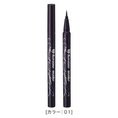

下まぶたの内側が黒くなる人

ヒロインメイク
スムースリキッドアイライナー スーパーキープ 01 漆黒ブラック
0.4mL・コシのある極細筆・ウォータープルーフ／お湯で落とせるタイプ
¥1100税込・出典掲載価格
書き込みの声
- 選ぶ条件：粘膜の内側に引いていて、まばたきのたびに下の皮膚と触れている人。こすれが理由の人
- 高いものをいろいろ試したけれど結局ここに戻ってきた、という言い方をする人が多く見られました
- お湯で落とせるので、夜にクレンジングでこする回数が減らせます。目のまわりは皮膚が薄い場所です
気になる声気になる点：色が沈んで見えるのは今日のメイクだけが理由ではありません。落とし方まで含めて選んでください
販売価格・容量・送料はリンク先でご確認ください